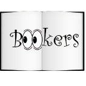

Logo, simpelweg via image, zoals meeste websites het logo doen.
Titels zijn in het lettertype Roboto Slab (weight; 700), lettergrootte 24px zoals dit
Ondertitels en de navigatieknoppen, zoals dit voorbeeld, zijn ook in het Roboto Slab lettertype (weight; regular), op een lettergrootte van 18px
Omschrijvingen en tekst niet vermeld hierin zijn met lettertype Roboto Slab (weight; Regular) op een lettergrootte van 12px
Tekst in de chats zijn zoals dit voorbeeld met lettergrootte 14px en het lettertype Yanone Kaffeesats (weight;regular)